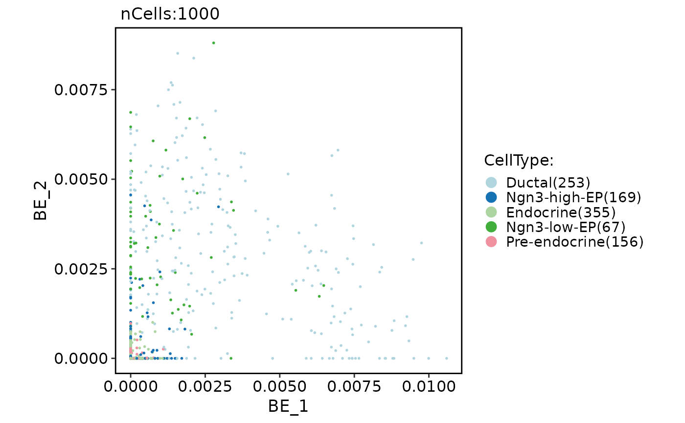
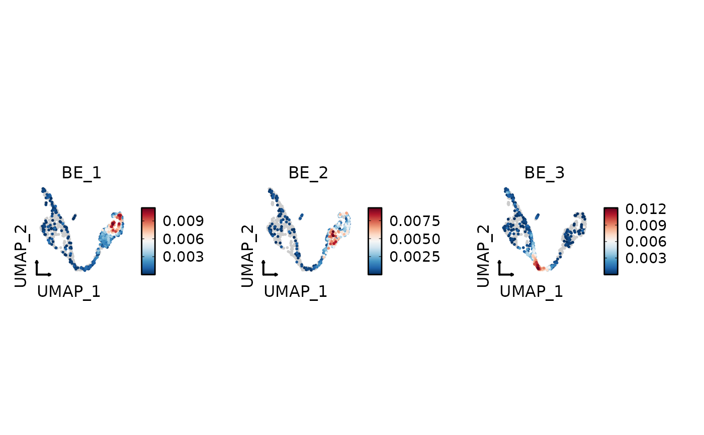
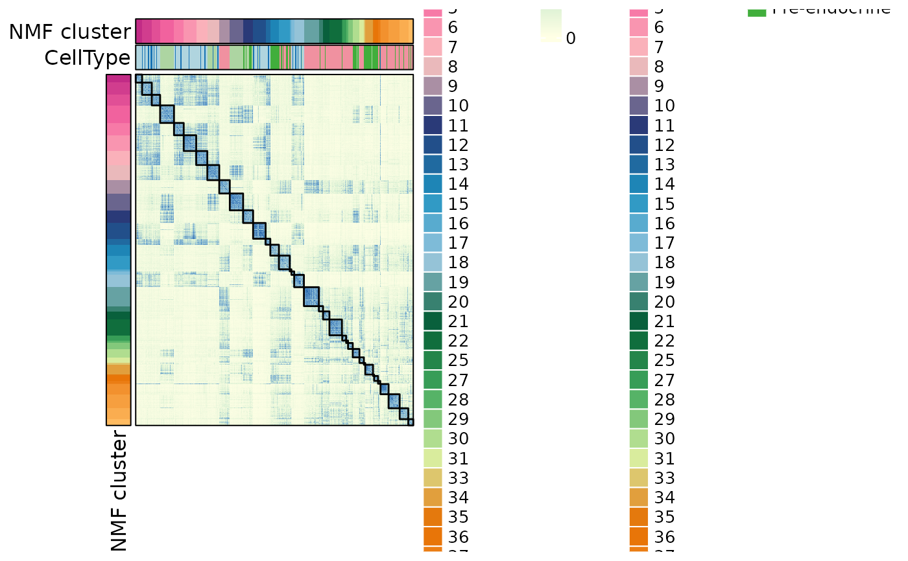
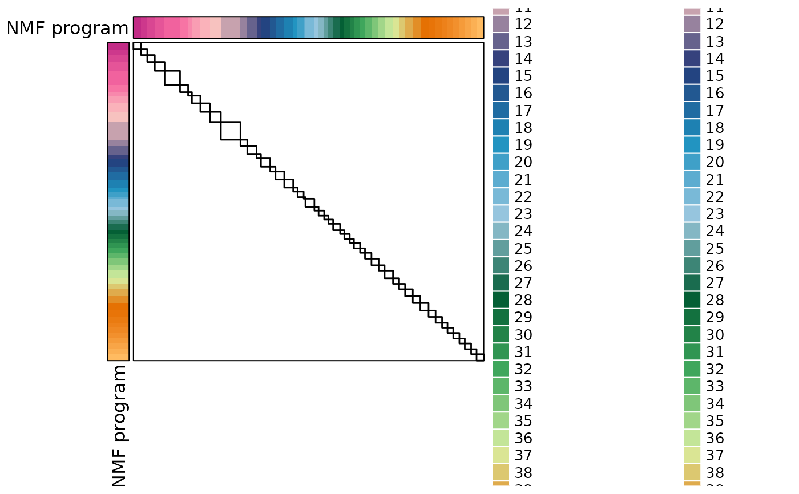

Run NMF (non-negative matrix factorization)
Usage
RunNMF(object, ...)
# S3 method for class 'Seurat'
RunNMF(
object,
assay = NULL,
layer = "data",
features = NULL,
nbes = 50,
nmf.method = "RcppML",
tol = 1e-05,
maxit = 100,
rev.nmf = FALSE,
ndims.print = 1:5,
nfeatures.print = 30,
reduction.name = "nmf",
reduction.key = "BE_",
verbose = TRUE,
seed.use = 11,
cores = 0,
...
)
# S3 method for class 'Assay'
RunNMF(
object,
assay = NULL,
layer = "data",
features = NULL,
nbes = 50,
nmf.method = "RcppML",
tol = 1e-05,
maxit = 100,
rev.nmf = FALSE,
ndims.print = 1:5,
nfeatures.print = 30,
reduction.key = "BE_",
verbose = TRUE,
seed.use = 11,
cores = 0,
...
)
# S3 method for class 'Assay5'
RunNMF(
object,
assay = NULL,
layer = "data",
features = NULL,
nbes = 50,
nmf.method = "RcppML",
tol = 1e-05,
maxit = 100,
rev.nmf = FALSE,
ndims.print = 1:5,
nfeatures.print = 30,
reduction.key = "BE_",
verbose = TRUE,
seed.use = 11,
cores = 0,
...
)
# Default S3 method
RunNMF(
object,
assay = NULL,
layer = "data",
nbes = 50,
nmf.method = "RcppML",
tol = 1e-05,
maxit = 100,
rev.nmf = FALSE,
ndims.print = 1:5,
nfeatures.print = 30,
reduction.key = "BE_",
verbose = TRUE,
cores = 0,
seed.use = 11,
...
)Arguments
- object
An object. This can be a Seurat object, an Assay object, or a matrix-like object.
- ...
Additional arguments passed to RcppML::nmf or NMF::nmf.
- assay
Which assay to use. If
NULL, the default assay of the Seurat object will be used. When the object also containsChromatinAssay, the default assay and additionalChromatinAssaywill be preprocessed sequentially.- layer
Which layer to use. Default is
data.- features
A character vector of features to use. Default is
NULL.- nbes
The number of basis vectors (components) to be computed. Default is
50.- nmf.method
The NMF algorithm to be used. Currently supported values are
"RcppML"and"NMF". Default is"RcppML".- tol
The tolerance for convergence (only applicable when nmf.method is
"RcppML"). Default is1e-5.- maxit
The maximum number of iterations for convergence (only applicable when nmf.method is
"RcppML"). Default is100.- rev.nmf
Whether to perform reverse NMF (i.e., transpose the input matrix) before running the analysis. Default is
FALSE.- ndims.print
The dimensions (number of basis vectors) to print in the output. Default is
1:5.- nfeatures.print
The number of features to print in the output. Default is
30.- reduction.name
The name of the reduction to be stored in the Seurat object. Default is
"nmf".- reduction.key
The prefix for the column names of the basis vectors. Default is
"BE_".- verbose
Whether to print the message. Default is
TRUE.- seed.use
Random seed for reproducibility. Default is
11.- cores
The number of threads to be used in older
RcppMLreleases that expose a global OpenMP thread setter. Newer releases manage their thread count internally. Default is0.
Examples
library(Matrix)
data(pancreas_sub)
pancreas_sub <- RunStandardWorkflow(pancreas_sub)
#> ℹ [2026-08-16 20:26:32] Start standard processing workflow...
#> ℹ [2026-08-16 20:26:32] Checking a list of <Seurat>...
#> ! [2026-08-16 20:26:32] Data 1/1 of the `srt_list` is "unknown"
#> Warning: Data 1/1 of the `srt_list` is "unknown"
#> ℹ [2026-08-16 20:26:32] Perform `NormalizeData()` with `normalization.method = 'LogNormalize'` on 1/1 of `srt_list`...
#> ℹ [2026-08-16 20:26:32] Perform `FindVariableFeatures()` on 1/1 of `srt_list`...
#> ℹ [2026-08-16 20:26:32] Use the separate HVF from `srt_list`
#> ℹ [2026-08-16 20:26:33] Number of available HVF: 2000
#> ℹ [2026-08-16 20:26:33] Finished check
#> ℹ [2026-08-16 20:26:33] Perform `ScaleData()`
#> ℹ [2026-08-16 20:26:33] Perform pca linear dimension reduction
#> ℹ [2026-08-16 20:26:33] Use stored estimated dimensions 1:23 for Standardpca
#> ℹ [2026-08-16 20:26:33] Perform `Seurat::FindClusters()` with `cluster_algorithm = 'louvain'` and `cluster_resolution = 0.6`
#> ℹ [2026-08-16 20:26:34] Reorder clusters...
#> ℹ [2026-08-16 20:26:34] Skip `log1p()` because `layer = data` is not "counts"
#> ℹ [2026-08-16 20:26:34] Perform umap nonlinear dimension reduction
#> ✔ [2026-08-16 20:26:43] Standard processing workflow completed
pancreas_sub <- RunNMF(pancreas_sub)
#> ℹ [2026-08-16 20:26:43] Running NMF...
#> ℹ BE_ 1
#> ℹ Positive: Ccnd1, Spp1, Eno1, Rps2, Mdk, Ldha, Pebp1, Mif, Gapdh, Prdx1
#> ℹ Cd24a, Krt8, Dbi, Aldoa, Cldn10, Rplp1, Mgst1, Npm1, Ybx1, Tkt
#> ℹ Hspe1, Ptma, Rpl12, Clu, Wfdc2, Sox9, Vim, Rpl22l1, Krt18, Tmsb10
#> ℹ Negative: Tmem108, Poc1a, Epn3, Wipi1, Tmcc3, Fgf12, Tecpr2, Zbtb4, Plekho1, Slc25a10
#> ℹ Gm10941, Trf, Man1c1, Hmgcs1, Nipal1, Jam3, Pgap1, Alpl, Tnr, Kcnip3
#> ℹ Gm15915, Rbp2, Cbfa2t2, Sh2d4a, Megf6, Prkcb, Naaladl2, Fam46d, Hist2h2ac, Tox2
#> ℹ BE_ 2
#> ℹ Positive: Spp1, Atp1b1, Id2, Vim, Sparc, Dbi, Rps2, Mgst1, Gsta3, Rpl22l1
#> ℹ Acot1, Anxa2, 1700011H14Rik, Sox9, Rplp1, Bicc1, Adamts1, Rps12, Nudt19, Cldn3
#> ℹ Pdzk1ip1, Ppp1r1b, Rpl36a, Rpl12, Ifitm2, Jun, Ptn, S100a10, Mdk, Mt1
#> ℹ Negative: Aacs, Tmem108, Poc1a, Epn3, B830012L14Rik, Tmcc3, Rfc1, Wsb1, Tecpr2, Zbtb4
#> ℹ Plekho1, Ppp2r2b, Haus8, Trf, Gm5420, Man1c1, Hmgcs1, Nipal1, Jam3, Tcerg1
#> ℹ Pgap1, Alpl, Larp1b, Tnr, Kcnip3, Lsm12, Ptbp3, Gm15915, Cntln, Rbp2
#> ℹ BE_ 3
#> ℹ Positive: Clu, Mt1, Spp1, Krt18, Mt2, Muc1, Gsta3, Cldn3, Mgst1, Sparc
#> ℹ Ttr, Serpinh1, Aldoa, Tpi1, H19, Dbi, Epcam, Mif, Pdzk1ip1, Gapdh
#> ℹ Prdx1, Cat, Ambp, Ldha, Ifitm2, Krt8, Csrp2, Anxa2, Rps2, Tmsb10
#> ℹ Negative: Rpa3, Aacs, Tmem108, Poc1a, Nop56, Wipi1, Tmcc3, Trib1, Rrp15, Fgfrl1
#> ℹ Nhsl1, Fgf12, Lama1, Slc20a1, Tecpr2, Zbtb4, Plekho1, Ppp2r2b, Haus8, Gm10941
#> ℹ Trf, Gm5420, Man1c1, Hmgcs1, Nipal1, Jam3, Tcerg1, Snrpa1, Alpl, Larp1b
#> ℹ BE_ 4
#> ℹ Positive: Cck, Tmsb4x, Mdk, Gadd45a, Selm, Ppp1r14a, Sox4, Btbd17, Cotl1, Ppp3ca
#> ℹ Sh3bgrl3, Jun, Ifitm2, Rps2, Tubb3, Rplp1, Igfbpl1, Ptma, Calr, Sult2b1
#> ℹ Hn1, Lrpap1, Rps12, Smarcd2, Nkx6-1, Rpl36a, Neurog3, Neurod2, Gnas, Rpl12
#> ℹ Negative: Elovl6, Tmem108, Poc1a, Epn3, Nop56, Wipi1, B830012L14Rik, Atic, Rrp15, Rfc1
#> ℹ Fgf12, Lama1, Slc20a1, Tecpr2, Ppp2r2b, Eif1ax, Slc25a10, Fam162a, P4ha3, Gm10941
#> ℹ Tenm4, Pde4b, Gm5420, Man1c1, Hmgcs1, Pgap1, Mgst2, Larp1b, Tnr, Kcnip3
#> ℹ BE_ 5
#> ℹ Positive: Spp1, Tmsb4x, Cyr61, Krt18, Tpm1, Krt8, Myl12a, Anxa5, Csrp1, Tnfrsf12a
#> ℹ Vim, Krt19, Jun, Anxa2, Tagln2, Nudt19, Sparc, Cldn7, Tmsb10, Clu
#> ℹ Myl12b, S100a10, Cd24a, Rps2, Myl9, Klf6, Cldn3, Lurap1l, Dbi, Rplp1
#> ℹ Negative: Elovl6, Aacs, Tmem108, Poc1a, Tmcc3, Rfc1, Nhsl1, Fgf12, Lama1, Slc20a1
#> ℹ Tecpr2, Plekho1, Ppp2r2b, Slc25a10, Fam162a, Gm10941, Tenm4, Man1c1, Nipal1, Jam3
#> ℹ Pgap1, Alpl, Tnr, Kcnip3, Ptbp3, Gm15915, Cntln, Ocln, Blvrb, Fras1
#> ✔ [2026-08-16 20:27:02] NMF compute completed
CellDimPlot(
pancreas_sub,
group.by = "CellType",
reduction = "nmf"
)

FeatureDimPlot(
pancreas_sub,
features = c("BE_1", "BE_2", "BE_3"),
reduction = "UMAP",
palette = "RdBu",
xlab = "UMAP_1",
ylab = "UMAP_2",
theme_use = "theme_blank"
)

ht_cells <- NMFHeatmap(
pancreas_sub,
plot_type = "cells",
cell_annotation = "CellType"
)
#> ℹ [2026-08-16 20:27:03] `NMFHeatmap()` input: 1000 cells x 50 NMF dimensions. Computing a 1000 x 1000 similarity matrix (~0.01 GiB dense numeric matrix).
#> ℹ [2026-08-16 20:27:03] Ordering `NMFHeatmap()` rows and columns ...
#> ℹ [2026-08-16 20:27:03] Building ComplexHeatmap object for `NMFHeatmap()` ...
#> ℹ [2026-08-16 20:27:03] Calculating `NMFHeatmap()` render size ...
#> ℹ [2026-08-16 20:27:03] Drawing `NMFHeatmap()`; this can take time for large similarity matrices ...
#> ℹ [2026-08-16 20:27:04] Assembling `NMFHeatmap()` plot object ...
ht_cells$plot

ht_features <- NMFHeatmap(
pancreas_sub,
plot_type = "features"
)
#> ℹ [2026-08-16 20:27:05] `NMFHeatmap()` input: 2000 features x 50 NMF dimensions. Computing a 2000 x 2000 similarity matrix (~0.03 GiB dense numeric matrix).
#> ℹ [2026-08-16 20:27:05] Ordering `NMFHeatmap()` rows and columns ...
#> ℹ [2026-08-16 20:27:05] Building ComplexHeatmap object for `NMFHeatmap()` ...
#> ℹ [2026-08-16 20:27:05] Calculating `NMFHeatmap()` render size ...
#> ℹ [2026-08-16 20:27:05] Drawing `NMFHeatmap()`; this can take time for large similarity matrices ...
#> ℹ [2026-08-16 20:27:11] Assembling `NMFHeatmap()` plot object ...
ht_features$plot
